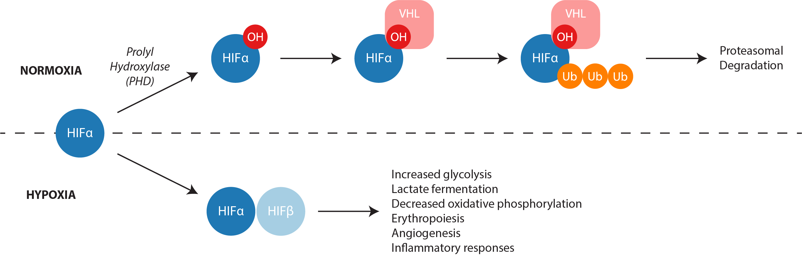
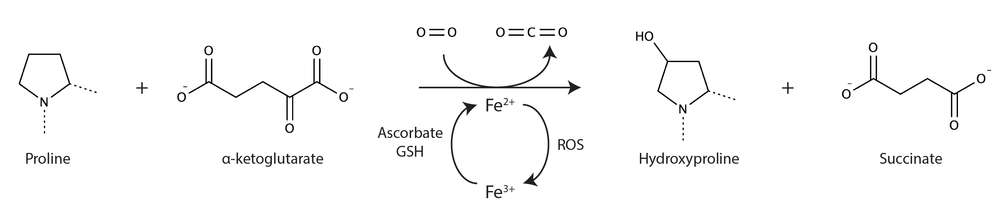

Metazoan cells depend on aerobic respiration to meet cellular energy demands. When oxygen supply fails to meet oxygen demand, cells must adapt their metabolic program to survive hypoxic stress. It is thought that hypoxia-inducible transcription factors (HIFs) are the primary mediators of the adaptive response through their regulation of metabolic gene expression. The HIF transcriptional program transition bioenergetic metabolism away from oxidative phosphorylation and towards glycolysis.

In normoxia, constitutively expressed HIF-α proteins undergo proline hydroxylation catalyzed by prolyl hydroxylase enyzmes (PHDs). This modification is recognized by von Hippel Lindau (VHL) ubiquitin ligase, thereby targeting HIF-α for proteasomal degradation. PHDs require molecular oxygen to catalyze this protein modification. When oxygen tension falls, PHD activity decreases, leading to HIF-α stabilization. HIF-α dimerizes with its transcriptional co-activator HIF-β to induce the expression of a variety of metabolic genes.
PHDs are the principle oxygen sensors in human cells and catalyze the following reaction on select HIF-α proline residues.

Much of our understanding of the hypoxia metabolic programs stems from studies of cancer cells and other diseased tissues. By contrast, the effects of hypoxia on primary cell metabolism are less clear. One of our goals is to understand how metabolic reprogramming facilitates cell survival in hypoxic primary cells. To accomplish this goal, we would like to address the following questions:
The shift in energy production from oxidative phosphorylation toward glycolysis dominates the current view of metabolic adaptation to hypoxia. Yet, we and others have observed that oxygen deficiency has wide-ranging impacts on a variety of intermediary metabolic pathways. For example, hypoxia-mediated increases in L-2-hydroxyglutarate (L2HG) support redox homeostasis and increased glutamine uptake by hypoxic cancer cells contributes to lipid biosynthesis. These studies illustrate the value of identifying novel biochemical pathways and defining their importance in the hypoxia response. Moreover, in humans, normal tissue oxygen tension ranges between 100 and 5 mmHg with marked tissue gradients and, in the case of cardiomyocytes, temporal fluctuations. These observations suggest the working hypothesis that the metabolic response of various cells may be uniquely tuned to their local oxygen environment. Here, we will test this hypothesis using metabolic flux analyses and an integrative omics strategy to identify both significant metabolic changes and their regulatory mechanisms in several human primary cell types.
HIFs are the so-called “master regulators” of the cellular response to hypoxia. Each of the three HIF- subunits (1-3) targets distinct, but overlapping, genes and exhibits different temporal responses to hypoxia [17-20]. In addition to hy-poxia, HIFs are also activated in normoxic cells by a variety of stimuli and are associated with the pathobiology of many diseases [21-23]. For example, HIF stabilization likely contributes to the Warburg metabolic phenotype associated with dysregulated cancer cell proliferation [24,25]. While previous studies have defined the transcrip-tional programs downstream of individual HIF- subunits [16,20,26-30,31 ], their unique metabolic effects re-main largely unexplored. Importantly, our preliminary data strongly suggest that inferring metabolic responses from transcriptional changes may be misleading (Fig. 3). Therefore, acquiring direct measurements of cell me-tabolism is critically important for bridging the gaps between transcriptional regulation and metabolic repro-gramming. Moreover, given the role of HIFs in disease pathobiology, it becomes critically important to under-stand how oxygen modulates their metabolic effects. Our working hypothesis is that each HIF- subunit plays a role in the metabolic changes observed in hypoxic cells. Here, we will determine the metabolic contributions of each HIF- subunit, alone and in combination, to cell metabolism in hypoxia and normoxia.
Hypoxia increases cellular reducing equivalents (e.g. NADH, GSH) as a consequence of impaired electron transport. Given the ubiquity of oxidoreductase enzymes that require these co-factors, the overall cellular redox balance can exert a marked influence on metabolite flux [32-34]. For example, over-expression of the water-forming NADH oxidase from Lactobacillus brevis, LbNOX, augmented gluconeogenesis in hepatocytes by reducing the intracellular NADH/NAD ratio [35]. The current view of the metabolic response to hypoxia is seen primarily through the lens of the HIF transcriptional program. The limitation of this view is that it excludes the direct and profound impact of hypoxia on cellular redox homeostasis. Indeed, data suggest that the primary role of the HIF transcriptional program is to mitigate reductive stress rather than preserve ATP production [36,37]. Moreover, our preliminary data suggest that consuming excess NADH in hypoxic cultures will stimulate lung fibroblast growth (Fig. 4). These preliminary data suggest the working hypothesis that the cellular redox environment itself regulates met-abolic flux in hypoxic cells. Here, we will identify how altering the cell redox environment changes cell metabo-lism in normoxia and hypoxia.